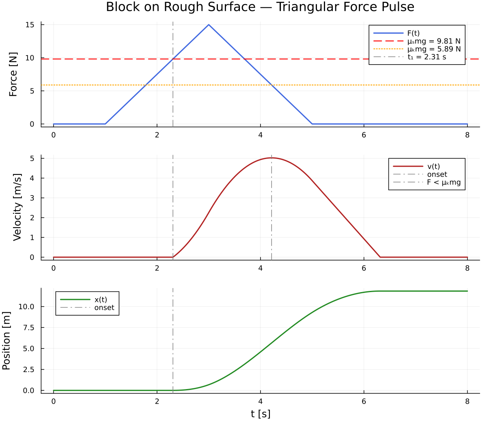

The wonder of not switching
Here's something that should bother you.
To solve a single physics problem — one block on one surface — a typical workflow touches five different tools: a LaTeX editor for the derivation, a code editor for the numerics, a terminal to run the solver, a plotting library to visualize, and the LaTeX editor again to write it up. Each transition is a context switch. Each context switch is a small death of momentum.
Now imagine a different world. You type a description of a physical system into a terminal. Fifteen minutes later, you have a 6-page derivation, a numerical solution, a 3-panel figure, and an 8-page report. You never left the terminal. You never opened another window. Every tool was a single command — a verb — in a language designed around how physicists actually think.
That double meaning — friction in the physics problem, friction in the workflow — is not accidental. Let's see both.
A block that doesn't want to move
Before any equations, look at this. Just look.

Three curves. One story.
Top panel: a force that rises, peaks, and falls — a symmetric triangle. Two horizontal lines mark two friction thresholds: static (red dashed) and kinetic (orange dotted).
Middle panel: the velocity. Nothing, nothing, nothing — then a sudden ramp up that continues past the force peak. The block accelerates even as the force declines. Then it slowly brakes to a stop.
Bottom panel: the position. Flat, then a steep S-curve, then a plateau. The block slides about 12 meters total.
Three questions to sit with
- Why does the block wait so long before moving? The force starts at t = 1 but the block doesn't budge until t ≈ 2.3.
- Why does peak velocity happen after peak force? The force peaks at t = 3, but velocity peaks near t = 4.2.
- Why does the block slide so far? The force pulse lasts 4 seconds, but the block keeps moving until about t = 7.
Every one of these questions has a crisp answer. And every answer lives in the gap between two numbers: μs and μk.
The honest equation
Now we can talk about the math — because you already know what it needs to explain.
Static friction isn't a force. It's a constraint. It gives exactly what's needed to keep the block still, up to a maximum of μsmg. The block doesn't move until the applied force exceeds that maximum. That's why it waits — the force has to climb from zero past the threshold.
The moment the block breaks free, friction drops from μsmg to μkmg. That drop — from 9.81 N to 5.89 N — is why the block overshoots so dramatically. It needed a big force to start, but once moving, it faces much less resistance.
The four phases
Static equilibrium 0 ≤ t < 2.31
Nothing happens. Friction absorbs the force perfectly. The acceleration is exactly zero.
Sliding, force rising 2.31 ≤ t ≤ 3
The block breaks free. Kinetic friction (5.89 N) is much less than the applied force — strong net acceleration.
Sliding, force falling 3 < t ≤ 4.22
Force is declining but still above kinetic friction. The block is still accelerating. This is why peak velocity comes after peak force.
Friction braking t > 4.22
Applied force drops below kinetic friction. The block decelerates. After t = 5, it's pure friction braking: ẍ = −μkg.
The dimensionless collapse
Here's the beautiful part. The entire problem — all four phases, all the dynamics — collapses to just two dimensionless numbers:
How long the block sits still, how far past the peak it accelerates, how far it slides — everything is controlled by α and β. Change the mass, change gravity, change the force — if α and β stay the same, the physics is identical.
Teaching a computer to feel friction
The derivation is done. Now we need to tell a computer about it. This is where /ode-problem-julia comes in — one command that reads the physics and produces a solvable ODE.
The second-order equation becomes a first-order system: u1 = position, u2 = velocity. The stick-slip transition lives in a conditional branch inside the right-hand side function:
function f!(du, u, p, t)
m, μₛ, μₖ, g, Fmax = p
v = u[2] # velocity
F = F_pulse(t, Fmax)
fₛ = μₛ * m * g # max static friction
fₖ = μₖ * m * g # kinetic friction
if v ≤ 0.0 && F ≤ fₛ
# Stuck: static friction balances applied force
du[1] = 0.0
du[2] = 0.0
else
# Sliding: kinetic friction opposes motion
du[1] = v
du[2] = (F - fₖ) / m
end
endThe subtle line
if v ≤ 0.0 && F ≤ fₛ — this single line
encodes the entire friction model. Both derivatives must be zeroed when stuck,
not just the acceleration. If you only zero du[2] but leave du[1] = v,
numerical noise in v will drift the position. The block would
"creep" even while supposedly stuck.
The computer lied to us
This is the most important part of the entire lesson. Not the equations. Not the code. This.
We defined the problem. We called the solver. It ran. It returned
Success. And it gave us this:
The solver didn't crash. It didn't warn us. It completed in microseconds, returned a green checkmark, and told us that a block hit by a 15-newton force pulse just... sat there. It was confidently, silently wrong.
What happened
The right-hand side is identically [0, 0] during
the stuck phase. The adaptive Tsit5 stepper evaluates the derivatives, sees
zeros, and concludes: "nothing is changing — I can take a huge step."
It leaps from t = 0 to well past t = 5 in a single step. It never evaluates F(t) at a time where the force exceeds the friction threshold. The entire triangular pulse — all four seconds of it — is invisible to the integrator.
The solver did exactly what it was designed to do. It took big steps when the derivatives were zero. The problem is that the derivatives changed in between those steps, and nobody told the solver to look.
This is a general hazard with switching ODEs: adaptive solvers can step right over a discontinuity if the right-hand side is flat on both sides of it. The solver isn't broken. The formulation is incomplete. We told the computer about the physics, but we didn't tell it about the geography of the physics — where the interesting parts are.
A student who gets Success and stops here publishes a paper
saying the block doesn't move. An expert knows that Success
only means "I didn't crash" — not "I'm right."
Now we're talking
The fix is two keywords:
sol = solve(prob, Tsit5(),
tstops=[1.0, 3.0, 5.0], # force the solver to step here
dtmax=0.01) # cap the step size
tstops tells the integrator: "I know there are
discontinuities at t = 1, 3, 5. Step there, no matter what." And
dtmax caps the step size so the solver can't
leap over the breakaway transition.
814 time points. The block slides 11.85 meters. The final velocity is 10−5 — numerical residual. The block came cleanly to rest. Now we're talking.
The deeper lesson
The failure was more valuable than a clean first run would have been. A clean run teaches you nothing — it just confirms the code works. The failure taught us something real about how adaptive integrators interact with hybrid dynamics. That lesson became a section in the final report. The pipeline doesn't just produce results. It produces understanding.
And then, the weather
Here's where the story takes a turn that no tutorial would include.
Immediately after publishing the 8-page physics report to GitHub, the same terminal — same session, same conversation — was used to check the weather. Not as a joke. As a real, personalized briefing:
This is the moment the lesson shifts from "here's a nice workflow for ODEs" to something bigger. The skills aren't physics tools. They're thinking tools. And thinking doesn't stop at the boundaries of a single discipline.
A physicist who can derive, solve, plot, publish, and plan her evening run in one unbroken session is not just more efficient. She is more present in her work. Every context switch is a chance for the thread to break. No switches, no breaks.
What this means
This is not a story about one physics problem. It's a story about what happens when you give a physicist a vocabulary for computation.
Skills mirror cognitive steps
/latex = derive it.
/ode-problem-julia = formulate it.
/ode-solve-julia = solve it.
/plot-julia = see it.
Each command maps to how a physicist thinks, not how a
computer organizes files.
Failures become sections, not setbacks
The solver's silent failure didn't derail the session — it became the most valuable section of the final report. The pipeline doesn't just tolerate debugging; it incorporates it.
Composable primitives compound
Each skill works alone, but the power is in chaining. The output of
/latex feeds /ode-problem-julia, which feeds
/ode-solve-julia, which feeds /plot-julia,
which feeds back into /latex. The second problem takes
minutes because the vocabulary is already built.
The platform has no walls
The same session that solved a hybrid ODE checked the weather, planned a walking route, and advised on phone battery management. There is no category boundary. There are only skills.
The session
→ Derived the governing ODE (6-page PDF)
→ Formulated the ODEProblem in Julia
→ Solved it — failed — diagnosed — fixed
→ Plotted the 3-panel figure
→ Wrote the 8-page report
→ Published to GitHub
→ Checked today's weather
→ Checked tomorrow's weather
→ Built this webpage
One terminal. One conversation. No context switches.